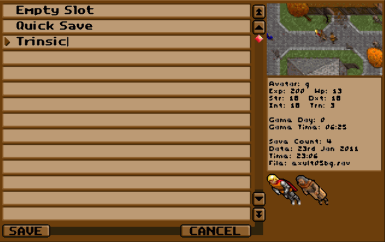
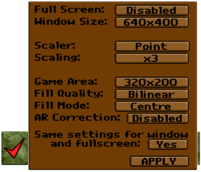
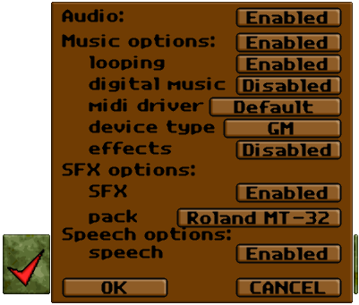
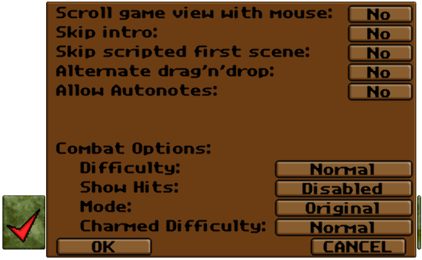

Exult - Documentation last changed: 15 August 2010(GMT)
The latest version of this document can be found here
0. Changes to the Documentation
0.1. - 15 August 2010
0.2. - 28 April 2010
0.3. - 11 March 2010
0.4. - 10 March 2010
0.5. - 08 March 2010
0.6. - 16 July 2009
0.7. - 03 June 2009
0.8. - 20 May 2009
0.9. - 19 May 2009
0.10. - 18 May 2009
0.11. - 28 April 2009
0.12. - 21 October 2007
0.13. - 08 April 2006
0.14. - 14 March 2005
0.15. - 14 August 2004
0.16. - 23 May 2004
0.17. - 11 February 2004
0.18. - 12 December 2003
1. Introduction
1.1. Exult Version
1.2. What is Exult?
1.3. Terms we use in regard to Exult and Ultima 7
2. Configurations
2.1. Installation
2.2. Location of exult.cfg
2.3. Settings in exult.cfg
2.4. Path-Settings
2.5. Path-Settings for Windows 95, 98, 98 SE and NT4.0
2.6. Path-Settings for Windows ME, 2000, XP, Vista and Windows 7
2.7. Path-Settings for Mac OS X
2.8. Path-Settings for *nix based systems
2.9. Advanced Configuration: Using both the original and the Add-Ons
2.10. Command line options
3. Audio
3.1. Music
3.2. MIDI Music
3.3. Abilities and limitations of the MIDI music engine
3.4. Windows MIDI Mapper
3.5. Digital Music
3.6. Installation of the digital music packs
3.7. Digital Wave Sound Effects
3.8. Speech
3.9. Turn off Audio
3.10. Linux and Audio
4. Video
4.1. Resolution
4.2. Scaler
5. Movement and Keys
5.1. Movement
5.2. Keyboard commands
5.3. Cheat keys
5.4. Map Editing keys
6. Game Menu
6.1. Access to the Game menu
6.2. Load/Save Game
6.3. Video Options
6.4. Audio Options
6.5. Gameplay Options
6.6. Combat Options
6.7. Quit
7. Mods and Patches
7.1. Introduction to Mods and Patches
7.2. Installing Mods
7.3. Installing Patches
7.4. Adapting the location of Mods and Patches
7.5. Where to find the savegames of modded games
7.6. Exchanging Savegames between original games and Mods
8. OS specific notes
8.1. How to get the Zaurus port working
8.2. Error Log
8.3. Making Digital Sound work on Mac OS X
9. Zaurus Guide
9.1. Author of this Guide
9.2. Sharp Zaurus
9.3. Zaurus SL5x00 and ROMs
9.4. Exult and Zaurus
9.5. Installing new packages
9.6. Using the standard ROM
9.7. Installing the non-required packages
9.8. Using the latest ROM
9.9. Solving the problems with the latest ROM
9.10. Useful tidbits
10. Installing the original Ultima VII games for use with Exult
10.1. Installing the floppy disks of BG/SI on Windows
10.2. Installing the floppy disks of the Add-Ons FoV/SS on Windows
10.3. Installing the floppy disks of BG/SI using DOSBox
10.4. Installing the floppy disks of the Add-Ons FoV/SS using DOSBox
10.5. Manual installation of the BG floppy disks
10.6. Manual installation of the SI floppy disks
10.7. Installing the CD-ROM versions of Ultima VII
10.8. Fixing permissions of Ultima Collection on *nix systems
11. Credits and Contact
11.1. Thanks
11.2. Contacting us
| 1. Introduction |
|---|
| | | 1.1. Exult Version | |
This documentation is for the 1.4.x SVN version of Exult.
If you have another Exult version, its documentation can be found where you installed the release.
| | | | 1.2. What is Exult? | |
Ultima 7, an RPG from the early 1990's, still has a huge following. But,
being a DOS game with a very nonstandard memory manager, it is difficult
to run it on the latest computers. Exult is a project to create
an Ultima 7 game engine that runs on modern operating systems, capable of
using the data and graphics files that come with the game.
Exult is written in C++ and runs on, at least, Linux, Mac OS X and Windows
using the SDL library to make porting to other platforms relatively easy.
The current version supports all of "Ultima 7: The Black Gate"
and "Ultima 7 part 2: The Serpent Isle", allowing you to
finish both games. This is only possible due to the work done
by other fans who have decoded the various Ultima 7 data files,
especially Gary Thompson, Maxim Shatskih, Jakob Schonberg, and Wouter Dijkslag.
Exult aims to let those people who own Ultima 7 (copyright 1993)
play the game on modern hardware, in as close to (or perhaps even surpassing)
its original splendor as is possible. You need to own
"Ultima 7: The Black Gate" and/or "Ultima 7: Serpent Isle" and optionally
the add-ons (not required to run) in order to use Exult,
and we encourage you to buy a legal copy.
| | | | 1.3. Terms we use in regard to Exult and Ultima 7 | |
We are using many terms in this documentation, the FAQ and other documentation
files that people may have difficulties to understand. Here we will try to give
some explanations.
- BG, SI, FoV
or SS:
we refer to "Ultima 7: The Black Gate" as BG and to "Ultima 7: Serpent Isle"
as SI. The add-ons "Forge of Virtue" and "Silver Seed" are called FoV and SS.
- eggs:
these are trip-wires that can cause monsters to spawn, execute scripts, play
music, change weather, trigger traps or teleport when you get near them.
- flex files:
also known as flexes, these are used by the original to store the data files.
Also when you choose to not use compressed save games (see save_compression_level in
ReadMe) our save games are also "flexed".
- gumps:
the windows used in the game interface for containers, characters, menus, etc..
- paperdoll:
when pressing
'i'
you get the inventory display. It's the picture of your
characters body (or the bodies of your party members) onto which you can drag all
kinds of equipment. The way this is displayed in SI is what we call
paperdoll. We integrated this for BG as well.
(see FAQ).
- shapes:
shape files are the format used for storage of all graphics elements (from UI buttons
to terrain features) of the games Exult supports. Shapes may contain one or more
frames (a frame is a single image).
- snapshot:
see FAQ.
Please note that our documentation usually refers to the latest snapshot.
- usecode:
that's the scripting language that drives all of U7 (conversations, objects...).
- Exult data folder:
that's the folder where Exult stores its data files (exult.flx, exult_bg.flx and
exult_si.flx).
- gamename
name of games that are set in exult.cfg's <game>, Exult knows by default
the gamenames blackgate, forgeofvirtue, serpentisle
and silverseed
|
| 2. Configurations |
|---|
| | | 2.1. Installation |
- First you need to get Ultima 7. Either you own it already, or
you buy it somewhere.
- You need an installed version of Ultima 7 to run Exult with.
At 10. Installing the original Ultima VII games for use with Exult
we have a guide on how to install the original games.
- Copy the installed Ultima7 folder to an appropriate folder
- Download Exult from our
download section
and install it. The Windows version comes with an installer that asks for the
location of both BG and SI. If you entered the correct location the next two
steps are not necessary.
- Now run exult (exult.exe on Windows)
and quit it immediately.
- Edit the configuration file with a text editor (e.g. on Windows use Notepad)
and enter the correct paths for the game folders - see 2.3.
for details
- Run exult and enjoy the game :-)
Word of advice: Don't mix the files from BG and SI.
Note: If you run Exult on an original Ultima7
game which you're actually in the middle of playing, your game
will be overwritten. Since Exult's files
have a different format, there is no way to convert those
original save games.
| | | | 2.2. Location of exult.cfg | |
Exult stores its setting in the file exult.cfg. The location of the file varies depending on
the Operating System and in the case of Windows OS it also depends on the version of Windows.
- On UNIX systems you can expect to find it in $HOME/.exult.cfg
- Mac OS X saves it to ~/Library/Preferences/exult.cfg
- Windows 95, 98, 98 SE and NT4.0 save the exult.cfg to the folder where you installed Exult to
(by default C:\Program Files\Exult)
- Windows ME saves exult.cfg to C:\Windows\Application Data\Exult
- Windows 2000 and XP save exult.cfg to LOCAL_APPDATA\Exult, which translates to
C:\Documents and Settings\YourUsername\Local Settings\Application Data\Exult for an English version
of Windows
- Windows Vista and Windows 7 also save exult.cfg to LOCAL_APPDATA\Exult, but on these this translates
to "C:\Users\YourUsername\AppData\Local\Exult"
- On Windows 2000, XP, Vista and 7 you can quickly access this folder by executing "shell:Local AppData\Exult"
in the "Run" entry of the Startmenu (or the "Run or Search" entry of the Windows Vista and 7 Startmenu)
| | | | 2.3. Settings in exult.cfg | |
Most of the options in Exult can be changed from the Setup
menu when you run Exult or via the Game Options menu. Exult stores these
changes in a configuration file. Except for changing paths to the games you
shouldn't need to edit the file. Very few options need manual editing.
Note: the settings in exult.cfg are the same on
all operating systems (except when explicitly stated below).
The file uses a simple hierarchical XML-like syntax, which should be simple to
understand and modify. Take care though. Handling of syntax errors in this file
is not well tested.
The file looks like this (do not copy the **and following - these are my remarks),
options you can only change manually are colored in purple.
Note: yes means enabled, no means disabled
| <config> | | <disk> | | <save_compression_level> | **save games are now compressed as zip files. 0 disables compression, 1 enables it, 2 compresses even a bit better. Default is 1. | |
1
| | </save_compression_level> | | <data_path> | **this is where Exult stores its data files that are needed to run (e.g. exult???.flx files) | |
data
| | </data_path> | | <music_path> | **optional. Location of digital music. See also 3.5. | |
data/music
| | </music_path> | | <game> | | <blackgate> | | <path> | | |
path_to/blackgate
| | </path> | | <savegame_path> | **optional. Default is the same as <path>, change to whatever you like.Also see 2.4. before changing it. | |
optional_path
| | </savegame_path> | | <static_path> | **optional. See 2.4. before changing it. | |
path_to/blackgate/static
| | </static_path> | | <gamedat_path> | **optional. See 2.4. before changing it. | |
optional_path/gamedat
| | </gamedat_path> | | <keys> | **configure custom key bindings or leave the (default)- see 5.2. | |
(default)
| | </keys> | | <waves> | **optional setting see 3.7. for configuration | |
jmsfx.flx
| | </waves> | | <mods> | **optional. See 7.4. | |
optional_path/mods
| | </mods> | | <patch> | **optional. See 7.4. | |
optional_path/patch
| | </patch> | | </blackgate> | | <serpentisle> | | <path> | | |
path_to/serpentisle
| | </path> | | <savegame_path> | **optional. Default is the same as <path>, change to whatever you like. Also see 2.4. before changing it. | |
optional_path
| | </savegame_path> | | <static_path> | **optional. See 2.4. before changing it. | |
path_to/serpentisle/static
| | </static_path> | | <gamedat_path> | **optional. See 2.4. before changing it. | |
optional_path/gamedat
| | </gamedat_path> | | <keys> | **configure custom key bindings or leave the (default)- see 5.2. | |
(default)
| | </keys> | | <waves> | **optional setting see 3.7. for configuration | |
jmsisfx.flx
| | </waves> | | <mods> | **optional. See 7.4. | |
optional_path/mods
| | </mods> | | <patch> | **optional. See 7.4. | |
optional_path/patch
| | </patch> | | </serpentisle> | | </game> | | </disk> | | <gameplay> | | <facestats> | **activates the status faces and the position on the screen.-1 disable,0 right, 1 middle, 2 right. | |
0
| | </facestats> | | <textbackground> | **with this enabled all the text in the games have a coloured background to improve readability. 0 gives a purple background, 1 orange, 2 light gray, 3 green, 4 yellow, 5 pale blue, 6 dark green, 7 red, 8 bright white, 9 dark gray, 10 white. -1 disables this. | |
-1
| | </textbackground> | | <fastmouse> | **enables faster cursor movement in full screen mode. | |
no
| | </fastmouse> | | <mouse3rd> | **enables using of the middle mouse button. | |
yes
| | </mouse3rd> | | <double_click_closes_gumps> | | |
no
| | </double_click_closes_gumps> | | <right_click_closes_gumps> | | |
no
| | </right_click_closes_gumps> | | <allow_double_right_move> | **double right-click lets the Avatar walk automatically to where you clicked. | |
yes
| | </allow_double_right_move> | | <gumps_dont_pause_game> | **yes doesn't pause the game when gumps are shown. | |
yes
| | </gumps_dont_pause_game> | | <cheat> | **enable/disable cheats | |
yes
| | </cheat> | | <bg_paperdolls> | **yes enables SI style paperdolls in BG. | |
no
| | </bg_paperdolls> | | <smooth_scrolling> | **0/25/50/75/100 percentage of how smooth the game scrolls when the avatar moves. 0 disables smooth scrolling and uses the "jerky" scrolling of the original game. | |
0
| | </smooth_scrolling> | | <skip_intro> | **this skips the in-game intro in BG; Iolo talks to Petre, the Avatar appears, Iolo talks to you, the mayor talks to you and so on. | |
no
| | </skip_intro> | | <skip_splash> | **this skips the splash screen, the intro before you get to the game menu. Disabling it brings you straight to the game menu. | |
no
| | </skip_splash> | | <formation> | **yes forces the party to walk in a formation similar to the original game.See FAQ in the FAQ. | |
yes
| | </formation> | | <step_tile_delta> | **Controls how far the Avatar will move before Exult recalculates the Avatar's and the party's movement. Bigger # avoids jerkiness, but may cause other problems. | |
8
| | </step_tile_delta> | | <combat> | | <difficulty> | **0 is default, negative values make combat easier, positive makes it harder. It affects the chance of a hit, and the HP's lost if a hit occurs. Ranges from -3 to 3 (easiest to hardest). | |
0
| | </difficulty> | | <mode> | **original or keypause. On keypause the game pauses when you hit space so you can make changes in combat. | |
original
| | </mode> | | <show_hits> | **no is default. With yes you see the hitpoints of NPCs in brackets after their name. | |
no
| | </show_hits> | | </combat> | | </gameplay> | | <audio> | | <enabled> | **enable/disable all audio - this takes precedence over the other audio settings. (You can change this in game via
'Esc'
- the setting is saved.) | |
yes
| | </enabled> | | <disablepause> | **enable/disable the pausing of SFX and digital music when the game pauses (e.g. not the focused window). MIDI music is currently not paused. | |
no
| | </disablepause> | | <sample_rate> | **set the sample rate of Exult. Default is 22050, Windows CE defaults to 11025. | |
22050
| | </sample_rate> | | <stereo> | **enable/disable stereo sound. Windows CE is set to disabled. | |
true
| | </stereo> | | <effects> | | <enabled> | **enable/disable sound effects. (You can change this in game via
'Esc'
- the setting is saved.) | |
yes
| | </enabled> | | </effects> | | <speech> | | <enabled> | **enable/disable speech. (You can change this in game via
'Esc'
- the setting is saved.) | |
yes
| | </enabled> | | </speech> | | <midi> | | <enabled> | **enable/disable ALL Music (You can change this in game via
'Esc'
- the setting is saved.) | |
yes
| | </enabled> | | <use_oggs> | **use pre-recorded ogg files for music - see 3.1. | |
no
| | </use_oggs> | | <driver> | **choose your music driver between default, MT32Emu, Fluidsynth, FMOPL, TiMidity, Windows, Amiga, Be_midi, Forked, KMIDI, alsa, CoreAudio, UnixSeqDevice. See 3.1. for details. | |
default
| | </driver> | | <convert> | **see 3.2. | |
gm
| | </convert> | | <looping> | **No disables music looping. See 6.4. | |
yes
| | </looping> | | <chorus> | | <enabled> | **alters the way MIDI is played. | |
no
| | </enabled> | | <level> | **how much the MIDI is altered. | |
0
| | </level> | | </chorus> | | <reverb> | | <enabled> | **alters the way MIDI is played. | |
no
| | </enabled> | | <level> | **how much the MIDI is altered. | |
0
| | </level> | | </reverb> | | <win32_device> | **choose the Windows MIDI Device. See 3.4. | |
-1
| | </win32_device> | | <alsa_port> | **use this to change the ALSA port when you have chosen alsa as your driver (format: XX:YY). | |
65:0
| | </alsa_port> | | <unixseqdevice> | **the device to be used when you have chosen the driver UnixSeqDevice | |
/dev/sequencer
| | </unixseqdevice> | | <fluidsynth_soundfont> | **path to the sound font that will be used to render the MIDI music when Fluidsynth is chosen as driver. | |
path
| | </fluidsynth_soundfont> | | <volume_curve> | **set volume (kind of at least, best don't change) | |
1.000000
| | </volume_curve> | | </midi> | | </audio> | | <video> | | <width> | **here you choose your resolution, it can be as big as your monitor allows. 320x200 is the resolution of the original. | |
320
| | </width> | | <height> | | |
200
| | </height> | | <scale_method> | **choose different scalers here - see 4.2. | |
2xSaI
| | </scale_method> | | <scale> | **2 enables / 1 disables scaling, some scalers support higher values. See 4.2.. | |
2
| | </scale> | | <fullscreen> | **do you want to play full screen? | |
no
| | </fullscreen> | | <disable_fades> | **"no" enables fading between different menu points | |
no
| | </disable_fades> | | <fps> | **Speed setting. Might help when the game seems too slow or too fast. The in game menu shows this setting in the Gameplay menu. | |
10
| | </fps> | | <gamma> | | <red> | **set gamma levels to adjust brightness, same as +/- in game | |
1
| | </red> | | <green> | | |
1
| | </green> | | <blue> | | |
1
| | </blue> | | </gamma> | | </video> | | <debug> | | <trace> | | <usecode> | **options are yes/no/verbose. This is used to trace the executed Usecode. (You shouldn't need this unless you are a programmer.) | |
no
| | </usecode> | | <intrinsics> | **options are yes/no. Used to trace intrinsics. (You shouldn't need this unless you are a programmer.) | |
no
| | </intrinsics> | | <combat> | **options are yes/no. If enabled, show combat messages. | |
no
| | </combat> | | </trace> | | </debug> | | </config> |
| | | | 2.4. Path-Settings | |
The way Exult generates default paths (for gamedat, savegames, mods, patches) has changed since Version 1.2. It will
not write these paths to exult.cfg but use them automatically.
The location where Exult expects those, and if needed, will create those folders is similarly depending on the Operating
System as the location of exult.cfg (see 2.2. Location of exult.cfg).
If you were to override these paths you would need to change the following tags (you can substitute gamename with the
"known games" - see 1.3.):
| <config> | | <disk> | | <data_path> | | |
data
| | </data_path> | | <game> | | <gamename> | | <path> | | |
path_to/gamename
| | </path> | | <static_path> | | |
path_to/gamename/static
| | </static_path> | | <savegame_path> | | |
optional_path
| | </savegame_path> | | <gamedat_path> | | |
optional_path/gamedat
| | </gamedat_path> | | <mods> | | |
path_to/gamename/mods
| | </mods> | | <patch> | | |
path_to/gamename/patch
| | </patch> | | </gamename> |
But normally you don't need to. On starting up, Exult will first read which games are available as configured in exult.cfg.
Then it will use the <path> setting and assume that <static_path> is <path>/static.
For <savegame_path>, <gamedat_path>, <mods> and <patch> Exult will assume Operating System specific paths.
These folders are used for:
- <data_path>
the most important folder. In this folder are the files Exult absolutely needs to run. We also check the checksums of these
files to make sure that Exult uses the correct ones.
- <static_path>
the second most important folder. In there you have the data files from the original game. You should
never touch these files.
- <savegame_path>
this is where Exult stores your savegames.
- <gamedat_path>
contains the (dynamic) data for the game you're currently playing. It's where the
"journey onward" and "quicksave" 'savegame' is stored.
- <mods>
here mods for games are saved to. More information on this at 7.1. Introduction to Mods and Patches
- <patch>
Patches for games are saved here. More information on this at 7.1. Introduction to Mods and Patches
Some notes for all Operating Systems:
- On Windows all of these settings, except for the <path> setting, are optional and not required,
Exult will sort this out on its own.
- On *nix and OS X you might even not need to touch the <path> setting, if you stick to our standard gamenames.
- You can either use the relative (e.g. ./ultima7) or absolute (e.g. c:\exult\ultima7) path to point to the
correct folder. The relative path uses the exult.exe, exult binary or Exult.app as base.
- Better don't use spaces in the path (e.g. c:\exult\the black gate\). Some people seem to have reported
problems with that.
- Path settings in exult.cfg are the same on all operating systems. Of course
you need to make adjustments on *nix based systems when you enter the absolute path.
- Exult and Exult Studio don't trust the exult.cfg 100% and will recognize which games
you entered the path for. This means, that if you entered the path to SI in the
<blackgate><path> Exult and Exult Studio will not be fooled.
- Don't ever point <static_path> and <gamedat_path> to the same folder.
| | | | 2.5. Path-Settings for Windows 95, 98, 98 SE and NT4.0 | |
On Windows 95, 98, 98 SE and NT4.0 Exult will not use any special folders, instead it will use the folder where the games BG
and SI are found.
| <config> | | <disk> | | <data_path> | | |
data
| | </data_path> | | <game> | | <gamename> | | <path> | | |
path_to\gamename
| | </path> | | <static_path> | | |
path_to\gamename\static
| | </static_path> | | <savegame_path> | | |
path_to\gamename
| | </savegame_path> | | <gamedat_path> | | |
path_to\gamename\gamedat
| | </gamedat_path> | | <mods> | | |
path_to\gamename\mods
| | </mods> | | <patch> | | |
path_to\gamename\patch
| | </patch> | | </gamename> |
| | | | 2.6. Path-Settings for Windows ME, 2000, XP, Vista and Windows 7 | |
On Windows ME, 2000, XP, Vista and Windows 7 Exult uses the special system folder LOCAL_APPDATA:
| <config> | | <disk> | | <data_path> | | |
data
| | </data_path> | | <game> | | <gamename> | | <path> | | |
path_to\gamename
| | </path> | | <static_path> | | |
path_to/gamename/static
| | </static_path> | | <savegame_path> | | |
LOCAL_APPDATA\Exult\gamename
| | </savegame_path> | | <gamedat_path> | | |
LOCAL_APPDATA\Exult\gamename\gamedat
| | </gamedat_path> | | <mods> | | |
path_to\gamename\mods
| | </mods> | | <patch> | | |
path_to\gamename\patch
| | </patch> | | </gamename> |
Note that on Windows ME LOCAL_APPDATA\Exult translates to C:\Windows\Application Data\Exult,
on Windows 2000 and XP to "C:\Documents and Settings\YourUsername\Local Settings\Application Data\Exult"
and on Windows Vista and W7 to "C:\Users\YourUsername\AppData\Local\Exult".
Also not that on Windows 2000, XP, Vista and 7 you can quickly access this folder by executing
"shell:Local AppData\Exult" in the "Run" entry of the Startmenu (or the "Run or Search" entry of
the Windows Vista and 7 Startmenu).
For now Exult's data folder is always installed into the same folder where you installed
Exult to (default is C:\Program Files\Exult).
Also not that in contrast to Mac OS X and *nix systems there is no default path, where Exult looks
for the games. You have to choose that folder yourself, but the installer will ask you for the BG and SI
folder to set your paths up.
Example: User named Dominus on Windows XP. BG is installed to C:\Ultima7\blackgate
and SI is installed to C:\Ultima7\serpentisle. The installer of Exult asks for the location of
these two games and automatically saves that to exult.cfg. The installer saves exult.cfg to
C:\Documents and Settings\Dominus\Local Settings\Application Data\Exult\exult.cfg. Exult gets
installed to C:\Program Files\Exult. When you save a game in BG the savegame will be saved to
C:\Documents and Settings\Dominus\Local Settings\Application Data\Exult\blackgate\exult00bg.sav, for SI to
C:\Documents and Settings\Dominus\Local Settings\Application Data\Exult\serpentisle\exult00si.sav.
If you install for example the keyring mod, you copy the contents of the Keyring.zip to
C:\Ultima7\blackgate\mods. When you save a game with the Keyring mod, this savegame will be found in
C:\Documents and Settings\Dominus\Local Settings\Application Data\Exult\blackgate\mods\keyring\exult00bg.sav
Example: User named Dominus on Windows 7. BG is installed to C:\Ultima7\blackgate
and SI is installed to C:\Ultima7\serpentisle. The installer of Exult asks for the location of
these two games and automatically saves that to exult.cfg. The installer saves exult.cfg to
C:\Users\Dominus\AppData\Local\Exult\exult.cfg. Exult gets installed to C:\Program Files\Exult.
When you save a game in BG the savegame will be saved to
C:\Users\Dominus\AppData\Local\Exult\blackgate\exult00bg.sav, for SI to
C:\Users\Dominus\AppData\Local\Exult\serpentisle\exult00si.sav.
If you install for example the keyring mod, you copy the contents of the Keyring.zip to
C:\Ultima7\blackgate\mods. When you save a game with the Keyring mod, this savegame will be found in
C:\Users\Dominus\AppData\Local\Exult\blackgate\mods\keyring\exult00bg.sav
| | | | 2.7. Path-Settings for Mac OS X | |
On Mac OS X Exult uses a couple of different folders to follow Apple's guidelines:
| <config> | | <disk> | | <data_path> | | |
/Library/Application Support/Exult/data
| | </data_path> | | <game> | | <gamename> | | <path> | | |
/Library/Application Support/Exult/gamename
| | </path> | | <static_path> | | |
/Library/Application Support/Exult/gamename/static
| | </static_path> | | <savegame_path> | | |
~/Library/Application Support/exult/gamename
| | </savegame_path> | | <gamedat_path> | | |
~/Library/Application Support/exult/gamename/gamedat
| | </gamedat_path> | | <mods> | | |
/Library/Application Support/exult/gamename/mods
| | </mods> | | <patch> | | |
/Library/Application Support/exult/gamename/patch
| | </patch> | | </gamename> |
Note that on OS X Exult also has a default folder (/Library/Application Support/Exult/)
for Exult's data and the files of the games. On purpose this folder is not in the User-only
space, so other users on the same mac can play the games and use the Exult.app.
But you will need to follow our gamename standard when you name the game
folders, see 1.3. Terms we use in regard to Exult and Ultima 7, otherwise Exult will not find them there.
Another specialty on OS X is that the Exult.app comes bundled with the Exult data, so
Exult will first use the data in the Exult.app and then use the data in the default location
(/Library/Application Support/Exult/data) or the location written down in exult.cfg's <data_path>.
This means that you can copy the sfx files and the digital music folder into the app bundle
(Exult.app/Contents/Resources/data) and Exult will automatically use these.
Example: User named Dominus on Mac OS X 10.6. BG is installed to
/Library/Application Support/Exult/blackgate and SI is installed to /Library/Application Support/Exult/serpentisle.
The app Exult.app is saved to /Applications. When you run Exult it will automatically recognize that BG and SI
are installed. You do not need to edit exult.cfg, which is saved to /Users/Dominus/Library/Preferences/exult.cfg.
When you save a game in BG the savegame will be saved to
/Users/Dominus/Library/Application Support/exult/blackgate/exult00bg.sav,
for SI to Users/Dominus/Library/Application Support/exult/serpentisle/exult00si.sav.
If you install for example the keyring mod, you copy the contents of the Keyring.zip to
/Library/Application Support/Exult/blackgate/mods. When you save a game with the Keyring mod, this savegame will be
found in /Users/Dominus/Library/Application Support/exult/blackgate/mods/keyring/exult00bg.sav.
| | | | 2.8. Path-Settings for *nix based systems | |
On *nix based systems Exult uses:
| <config> | | <disk> | | <data_path> | | |
/usr/local/share/exult
| | </data_path> | | <game> | | <gamename> | | <path> | | |
/usr/local/share/exult/gamename
| | </path> | | <static_path> | | |
/usr/local/share/exult/gamename/static
| | </static_path> | | <savegame_path> | | |
$HOME/.exult/gamename
| | </savegame_path> | | <gamedat_path> | | |
$HOME/.exult/gamename/gamedat
| | </gamedat_path> | | <mods> | | |
/usr/local/share/exult/gamename/mods
| | </mods> | | <patch> | | |
/usr/local/share/exult/gamename/patch
| | </patch> | | </gamename> |
Like on OS X, Exult uses on *nix systems a default path for its data folder and the game files.
Unless you use a different path in exult.cfg, Exult will look for these in /usr/local/share/exult.
But you will need to follow our gamename standard when you name the game
folders, see 1.3. Terms we use in regard to Exult and Ultima 7, otherwise Exult will not find them there.
Example: User named Dominus on Ubuntu. BG is installed to
/usr/local/share/exult/blackgate and SI is installed to /usr/local/share/exult/serpentisle.
When you run Exult it will automatically recognize that BG and SI are installed. You do not
need to edit exult.cfg, which is saved to $HOME/.exult.cfg.
When you save a game in BG the savegame will be saved to $HOME/.exult/blackgate/exult00bg.sav,
for SI to $HOME/.exult/serpentisle/exult00si.sav.
If you install for example the keyring mod, you copy the contents of the Keyring.zip to
/usr/local/share/Exult/blackgate/mods. When you save a game with the Keyring mod, this savegame will be
found in $HOME/.exult/blackgate/mods/keyring/exult00bg.sav.
| | | | 2.9. Advanced Configuration: Using both the original and the Add-Ons | |
If you own both BG or SI without the add-ons FoV and SS and also the versions
that has the add-ons you can now have them both shown in the Exult menu. Before
you had to edit the exult.cfg when you wanted to switch the games.
You now just have to add the tags for the two games.
| <config> | | <disk> | | <game> | | <blackgate> | | <path> | | |
path_to/blackgate
| | </path> | | </blackgate> | | <forgeofvirtue> | | <path> | | |
path_to/forgeofvirtue
| | </path> | | </forgeofvirtue> | | <serpentisle> | | <path> | | |
path_to/serpentisle
| | </path> | | </serpentisle> | | <silverseed> | | <path> | | |
path_to/silverseed
| | </path> | | </silverseed> | | </game> | | </disk> |
If you only own one version of the game, you don't have to worry about this
advanced configuration, just follow the instructions at 2.1..
You only have to do this extra work if you want to differentiate between original game with
and without the add-on.
Note: You cannot interchange savegames of games started with or without the add-ons.
And again, Exult and Exult Studio will not be fooled by false games under
<gamename><path>.
| | | | 2.10. Command line options | |
Exult offers some "hidden" command line options:
- -h or --help
Shows all the command line parameters in stderr (stderr.txt on Windows systems).
- -v or --version
Shows version information in stderr.
- -c configfile
Specify alternate config file (relative or absolute paths work).
- --bg
Starts the game with the Black Gate menu (prefers original game).
- --fov
Starts the game with the menu of the Black Gate with Forge of Virtue expansion.
Only useful if you have FoV added as described at 2.9.,
otherwise it will just work like the command '--bg'.
- --si
Starts the game with the Serpent Isle menu (prefers original game).
- --ss
Starts the game with the menu of the Serpent Isle with Silver Seed expansion.
Only useful if you have SS added as described at 2.9.,
otherwise it will just work like the command '--si'.
- --nomenu
Skips game menu.
- --buildmap x
x = 0 shows all roofs, x = 2 pops them all.
You have to specify the game first (Example: exult --bg --buildmap 0).
Builds the map of the game specified. The map is huge and in pcx
format, you will need a lot of ram to even look at this map once it is build
(and even that requires a lot of patience)
Exult is required to be run in windowed mode and you get the best map if you
started a new game before you build the map.
You need to specify a game, either by '--bg' (or '--si', '--fov', '--ss') or
with the '--game'/'--mod' option.
- --nocrc
Recently we added a crc check that Exult doesn't start when the
exult*.flx files in the data folder aren't the same it got compiled with.
This parameter lets the game start nevertheless. Don't try this if you
don't know what you are doing.
- --game gamename
Loads a game specified in exult.cfg when there are other games made
with Exult Studio.
- --edit
Start in map-edit mode. This will also load Exult Studio when the game is started.
- --write-xml
Write 'patch/exultgame.xml'. Only useful for game editing.
- --mod modname
Must be used together with '--bg', '--si' or '--game gamename'; runs the specified
game using the mod with title equal to 'modname'. 'modname' is the name of the mod
cfg file (e.g. keyring.cfg means 'modname' 'keyring'.
|
| 3. Audio |
|---|
| | | 3.1. Music | |
There are three general ways that music is played in Exult. One is using MIDI, which
plays the music through any MIDI device, or software synthesizers like TiMidity and
FluidSynth. Another way is Digital Music encoded into OGG (similar to MP3) which was
recorded directly from a Roland MT-32. The third option is FMOpl which emulates
Opl2/Adlib.
The MIDI files are converted on-the-fly from the original Ultima 7 MT-32 files to
General MIDI format so that they will be playable on modern General MIDI and
General MIDI/GS supporting sound cards.
The Music driver options can be changed in the in-game menu that you open by hitting
'ESC'
.
There you can enable Digital Music and change the MIDI driver, through which you can
also select the FMOpl emulation. When you enable Digital Music, it takes precedence over
the MIDI driver.
| | | | 3.2. MIDI Music | |
The MIDI driver can be changed to:
- Default
This setting utilizes the default MIDI driver of your system.
- FMOPL
This is a Software FM Synthesizer (also known as a emulated Opl2/Adlib).
- TiMidity
is a software synthesizer that can play MIDI files without a hardware synthesizer.
You can install TiMidity on all major Operating systems. You need to place tmidity.cfg
into the same folder where the Exult executable is installed to, otherwise TiMidity
will not work.
- FluidSynth
is another software synthesizer, which uses SoundFont 2 technology without need for a
SoundFont-compatible sound card. It is available for many Operating Systems and opposed
to TiMidity still actively developed.
Since Fluidsynth pulls in many dependencies it is not compiled into Exult at the moment.
If you compiled Exult ourself and you enabled Fluidsynth you just need to edit
exult.cfg and point <config><audio><midi><fluidsynth_soundfont>
to the SoundFont you want to use.
- MT32Emu
Roland MT32 emulation requires either the ROM set "MT32_CONTROL.ROM" and "MT32_PCM.ROM" or
the ROM set "CM32L_CONTROL.ROM" and "CM32L_PCM.ROM" in the Exult data folder.
If both sets are present the CM32L ROM set will be used.
- Windows
When you are using Windows and for some reason the Default driver doesn't work.
- Amiga
Uses the Amiga MIDI driver on the Amiga system.
- Be_midi
For use on BeOS.
- CoreAudio
uses XMIDI on Mac OS X.
- CoreMIDI
with this MIDI driver a Real MT32 can be used on Mac OS X.
- alsa
uses ALSA on Linux systems. If your ALSA port is not on 65:0 you need to change
<config><audio><midi><alsa_port> in the exult.cfg.
- Forked
On *nix systems uses POSIX fork to create a new thread which will then handle the MIDI playback
- KMIDI
On Linux systems uses uses libkmidi, a KDE MIDI library.
- UnixSeqDevice
On Linux systems writes to special symbolic file, default "/dev/sequencer". This can be
changed at <config><audio><midi><unixseqdevice> in the exult.cfg.
For drivers that use a real MIDI device, the device type for MIDI can be changed to:
- MT32
This option will output the music with nothing changed. Because
the mapping will be for MT32s you should only use this option if
you have a MT32 compatible device. With this option Exult will
also send SysEx messages to the Roland MT32 display, which are nice
to watch when you have such a device.
- GM
This will convert the MT32 patches to standard General MIDI patches.
Conversion is fairly accurate but some instruments may be different.
- GS
This will convert the MT32 patches to their equivalent GS patches. This
will be a more accurate conversion that straight gm since more of the
MT32 patches are in the GS set. However, not all MIDI devices will
support this mode.
- GS127
This option is for MIDI devices that have a MT32 patch bank installed
in Bank 127. Some GS implementation have this, some don't. Only use
this if you know that you have a MT32 implementation on Bank 127.
- Fake MT32
This is for MIDI devices that behave like a MT32 but don't support
SysEx messages. Use that option if you have a SoundFont or similar loaded
for your sound card (or software synth such as FluidSynth) that contains
the MT32 capital tones but the device can't be reprogrammed using MT32
SysEx commands by Exult.
NOTE: Currently the conversion to GS and GS127 is not finished and
the notes are only mapped to General MIDI.
| | | | 3.3. Abilities and limitations of the MIDI music engine | |
Due to the way the class was constructed input can be in either .mid, .rmi or
the Miles Sound System .xmi format. There are no limitations to they types of
.mid and .rmi supported. They can be Type 0, 1 and the rarely seen type 2. The
loading routine is also fairly lenient of erroneous XMIDI files that do not
have correct XMIDI headers.
During the development of the XMIDI class it was found that certain .xmi files
in Serpent Isle had the first patch changes after the first note. The
converter will attempt to correct these errors. However it may cause problems
with some MIDI files. Currently this can not be disabled and may change in the
future.
| | | | 3.4. Windows MIDI Mapper | |
You can now tell Exult which MIDI device it should use. This is useful if you
want Exult to use a different MIDI device than the default Windows device
(like an MT-32).
To do this start Exult, on the menu choose "Exit". Now open the file stdout.txt
in the folder where exult.cfg is located (see 2.2.).
You will see a listing of the MIDI devices.
For example with an SB Live! in Win2k it will look like this:
4 Midi Devices Detected
Listing midi devices:
-1: Microsoft MIDI-Mapper
0: A: SB Live! MIDI Synth
1: B: SB Live! MIDI Synth
2: SB Live! MIDI UART
By default Exult uses the Microsoft MIDI-Mapper (which uses the device you choose
in the Windows Multimedia Properties).
To change the MIDI Device open exult.cfg and change
| <win32_device> | | |
-1
| | </win32_device> |
with the device you want to use.
| | | | 3.5. Digital Music | |
Exult needs the Digital Music pack to play Digital Music in the game. The music
pack contains music for both Black Gate and Serpent Isle, encoded in high quality
OGG format. Simon Quinn recorded the current Digital Music pack on an original
Roland MT-32 and with this you will experience the music as it would be heard with
the original game.
Digital Music should work on any platform that supports digital sound and does not
use any MIDI, so it is also a good option for platforms with no MIDI support.
Additionally, Digital Music supports a number of background atmospheric SFX tracks
that are played when no music is playing. These consist of wind, bird etc effects
outside and other sound effects when inside a dungeon. These SFX tracks are not
available when using MIDI as they play Roland MT-32 specific voices that cannot
be mapped to GM/GS. These SFX tracks do not play when the music is switched off.
The digital music pack seems to have two issue, though, some tracks seem to have
been recorded at lower volume than the others. Also, since both the digital music
and the sound effects are played by the Wave / PCM of your sound card, you can no
longer have a different volume for music and sound effects.
| | | | 3.6. Installation of the digital music packs | |
The Digital Music pack can be downloaded from
http://exult.sourceforge.net/download.php, the files are called
Ogg encoded Music files for Exult Part 1
(U7MusicOGG_1of2.zip) and
Ogg encoded Music files for Exult Part 2
(U7MusicOGG_2of2.zip). The readme.txt found in the ZIP files contains installation
instructions that are no longer 100% valid and should not be followed.
Create a music folder in exult/data (i.e. exult/data/music/) and extract the two ZIP
files U7MusicOGG_1of2.zip and U7MusicOGG_2of2.zip into this folder.
If you are not sure where the data folder is, search for the file
exult_bg.flx on your hard drive as this file is always in the data
folder.
Now start up Exult and start either a game of BG or SI. Hit
'ESC'
to enter
the game menu. Here select Audio Options and in the "Music options"
enable the digital music option.
It isn't necessary but you can also customize the location of the music files by adding
<music_path> to exult.cfg. Example:
| <config> | | <disk> | | <data_path> | | |
data
| | </data_path> | | <music_path> | | |
data/music
| | </music_path> |
| | | | 3.7. Digital Wave Sound Effects | |
Exult needs the so called SFX packs to enable sound effects for Ultima 7.
You have to download separate packs for each game as order of the SFX in BG
and SI varies a bit and otherwise will sound odd. However there is a little
issue with SFX playback in SI: In combat the SFX may be a little wrong as we
still haven't figured out all the data in the 'weapons.dat'.
Also Exult doesn't yet playback all the SFX that the original did.
We currently have two soundpacks for each game. Joseph Morris recorded the original
SoundBlaster SFX and Simon Quinn recorded the Roland MT32 SFX. You can find them on
our download page at
http://exult.sourceforge.net/download.php.
"Sound pack for Blackgate" and "Sound pack for Serpent Isle" are the SoundBlaster
sound effects.
"Sound pack for Black Gate (Roland MT-32)" and "Sound pack for Serpent Isle (Roland MT-32)"
are the Roland MT32 sound effects.
Don't be confused by the "Zaurus SI/BG SFX package", these are just the repackaged
SoundBlaster sound effects for the Zaurus device. If you don't have such a device, these
don't concern you.
Extract the zip files into your Exult data folder. Exult will automatically find and
use the SFX packs and will default to use the Roland MT32 pack when both both packs
(SoundBlaster and Roland MT-32) are present. You can then choose between the packs in the
Game Menu (6.4.), of course you can override this setting in the
exult.cfg (see 2.3.).
An example of how the relevant part of exult.cfg looks when you prefer the SoundBlaster SFX:
| <blackgate> | | <waves> | | |
jmsfx.flx
| | </waves> | | </blackgate> | | <serpentisle> | | <waves> | | |
jmsisfx.flx
| | </waves> | | </serpentisle> |
Note: Currently when you switch the sfx pack during game play, you need to restart the
game for all sound effects to use the new pack. This is a known issue and will not be there forever.
| | | | 3.8. Speech | |
Exult can play the Ultima VII's speech through SDL, and its own
internal mixer. You can turn on/off speech via the in-game menu or change the settings in
exult.cfg - see 2.3..
| | | | 3.9. Turn off Audio | |
Press
'Esc'
to turn
on/off Music, Speech and SoundFX via the in-game menu or change the settings in
exult.cfg - see 2.3..
| | | | 3.10. Linux and Audio | |
Apparently Exult has some problem with the sound drivers in the 2.4 kernel, notably
with the SoundBlaster Live.
Therefore we advice our users to install ALSA (Advanced Linux Sound Architecture)
found at http://www.alsa-project.org. ALSA is going to replace
OSS in the upcoming stable (2.6) Kernel anyway.
We are sorry for this.
You can now configure the ALSA port for your distribution in .exult.cfg (see
2.3.). By default we use 65:0, Gentoo needs 128:0.
|
| 4. Video |
|---|
| | | 4.1. Resolution | |
By default Exult runs at 320x200 (which is the resolution the original
Ultima VII used). Exult can use different scaling engines to
double the size to 640x400 and increase the quality of the graphics.
Using higher resolutions is considered cheating as you can see too much of
the surrounding area. Since the game was designed to be played at a specific
size, this can actually lead to plot-stopping problems; hence we will not fix
any problem caused by your cheating! Don't say we didn't warn you :-)
Actually being able to play in higher resolutions is one of the big advantages
of Exult but as mentioned above it comes with a price.
Within the game you can use the
'Alt +'
and
'Alt -'
to switch resolution..
| | | | 4.2. Scaler | |
The scalers also work with higher resolutions than 320x200. To change the
scaling method either use the Exult menu or change your exult.cfg -
see 2.3..
- Point
simple but very fast scaler. Only duplicates pixels, no fancy interpolation.
Can be used for arbitrary integer scales (2x, 3x, 4x...).
- Bilinear
bilinear interpolation to smooth the result. Slower than point, but looks better.
Only 2x.
- BilinearPlus
same as Bilinear and it may even be a bit faster.
- Interlaced
identical to point except that it skips every other line to be even faster.
Can be used for arbitrary integer scales (2x, 3x, 4x...).
- Scale2x by Andrea Mazzoleni
This is a non-blurring scaler that looks good without soaking up a lot of CPU cycles.
Get more information on this scaler at http://scale2x.sf.net.
- SuperEagle by Derek Liauw
Only 2x.
- Super2xSai by Derek Liauw
Only 2x.
- 2xSaI by Derek Liauw
Only 2x. The current Exult default scaler.
- HQ2X
High quality scaler, that uses a lot of CPU cycles. Only 2x.
- HQ3X
High quality scaler, that uses a lot of CPU cycles. Only 3x.
- OpenGL
Can be used for arbitrary integer scales (2x, 3x, 4x...). But this scaler is not considered
stable. You can expect errors when using this scaler.
The scalers by Derek Liauw are slower than the ones above it but look much better from
my personal point of view. Try out for yourself which one you like most since this is a
highly subjective topic.
|
| 5. Movement and Keys |
|---|
| | | 5.1. Movement |
- Hold right mouse button down to move Avatar.
- Double-click with the right mouse button will make the Avatar
find a path to the selected spot.
- Click on objects with left button to identify them.
- Double-click on characters to hold conversations.
- Double-click on doors, shutters with left button to open or
close them.
Note that on MacOS you have to hold down the
'Cmd'
key and the
mouse button to have the functionality of a right mouse button.
Nadir implemented keyboard walking in the post 1.0 versions of Exult.
The Avatar can be moved with the arrow keys (or the keypad keys for more precise
movement). When you move while holding shift the Avatar runs.
| | | | 5.2. Keyboard commands | |
All key commands of Exult can be changed for either BG or SI. However, there
is a default setting which closely follows the original with the addition of
some improvements.
To change your key bindings first edit the defaultkeys file in your Exult
folder (bgdefaultkeys.txt for BG and sidefaultkeys.txt for SI), change the
bindings and save the file (e.g. as my_keys.txt). Now you have to change
exult.cfg to use that file. See the keys settings at 2.3..
Change (default) to my_keys.txt.
During the game press
'h'
to see a help
screen with all the keys (for MacOS change Alt for Cmd - the in-game help screen
shows the correct key combination for MacOS).
'KP'
means keypad.
| Default keyboard commands |
|---|
| KP+/- | | Change brightness | | Esc | | Show Game menu box and closes all open boxes | | right | | walk east | | left | | walk west | | up | | walk north | | down | | walk south | | KP1 | | walk southwest | | KP2 | | walk south | | KP3 | | walk southeast | | KP4 | | walk west | | KP5 | | recenter map | | KP6 | | walk east | | KP7 | | walk northwest | | KP8 | | walk north | | KP9 | | walk northeast | | Shift-right | | run east | | Shift-left | | run west | | Shift-up | | run north | | Shift-down | | run south | | Shift-KP1 | | run southwest | | Shift-KP2 | | run south | | Shift-KP3 | | run southeast | | Shift-KP4 | | run west | | Shift-KP6 | | run east | | Shift-KP7 | | run northwest | | Shift-KP8 | | run north | | Shift-KP9 | | run northeast | | F4 | | Toggle full screen | | Alt-Enter | | Toggle full screen | | b | | Use spell book | | c | | Combat mode | | Space | | pause combat | | f | | Use food | | g | | Use Abacus | | h | | Show list of keyboard commands | | i | | Show inventory | | j | | SI: Show jawbone | | k | | BG: Try all keys to unlock a lock | | k | | SI: Use keyring | | Alt-k | | SI: Try all keys to unlock a lock | | l | | SI: Show combat stats | | m | | Show map | | n | | Show notebook | | p | | Use lockpicks | | Alt-q | | Exit game | | r | | Brings up status bars. First three strokes change the location of the bar. The fourth disables it again. | | Ctrl-r | | Quick restore | | Ctrl-s | | Quick save | | s | | Show save/load box | | Ctrl-Alt-s | | Screenshot | | t | | Target, instead of double clicking, shows a cursor and pauses the game until you click on something | | v | | About screen | | w | | Use watch, shows the time if you got a watch | | Alt-x | | Exit game | | z | | Show stats | | 1 | | Show inventory for Avatar | | 2 | | Show inventory for character 2 | | 3 | | Show inventory for character 3 | | 4 | | Show inventory for character 4 | | 5 | | Show inventory for character 5 | | 6 | | Show inventory for character 6 | | 7 | | Show inventory for character 7 | | 8 | | Show inventory for character 8 |
In conversations you have the ability not just click on the answer
with the mouse but also to use the numeric keys. The response options
aren't numbered visually but logically with the dots. Also press
'Esc'
to select "bye" if possible.
| | | | 5.3. Cheat keys | |
Press
'ctrl-h'
during the game to see a help screen with all
the cheat keys.
'KP'
means keypad.
| Cheat commands |
|---|
| Alt-KP+/- | | Change resolution | | Alt-Arrow keys | | Scroll map | | home | | Recenter map on the Avatar | | KP5 | | Recenter map on the Avatar | | F2 | | Cheat screen similar to the originals'. Allows for some level of NPC editing and other cheat options | | F3 | | Map teleport | | F10 | | Show endgame | | F11 | | SI: Play alternate intro | | Ctrl-b | | Shape browser | | Insert | | Create object (that is chosen in the shape browser) | | Ctrl-d | | Delete object | | e | | Toggle egg display | | Alt-g | | Toggle God mode | | Ctrl-g | | Change avatar gender | | Alt-h | | Hackmover (you can move all objects around and it disables weight check | | Ctrl-h | | list cheat keys | | Ctrl-Alt-h | | Resurrect, heal party, cure poison and still hunger | | Alt-i | | Toggle infravision | | Ctrl-l | | Level up party | | Ctrl-m | | Get 100 gold coins | | Alt-Shift-m | | Play previous song | | Alt-m | | Play next song | | Alt-n | | SI: Toggle naked flag | | Alt-p | | SI: Toggle Petra mode | | Alt-s | | Change skin color | | Ctrl-Alt-t | | Map teleport | | Ctrl-t | | Advance to next time period | | Alt-t | | Teleport (to current cursor position) | | Alt-w | | Toggle archwizard mode (all spells etc.) | | Alt-1 | | Test music, SFX, speech | | Ctrl-Alt-g | | Grab NPC for cheat screen | | Ctrl-Alt-p | | Pick pocket cheat, when enabled double-clicking on a NPC displays the actors inventory | | Ctrl-n | | NPC number, When enabled, clicking an a NPC will display their number instead of their name. Useful for the cheat screen. |
| | | | 5.4. Map Editing keys | |
With the ongoing development of Exult a lot of keys were added that are mainly useful
for map editing with Exult Studio. Hit
'shift-h'
to see the map edit keys help screen.
| Map edit commands |
|---|
| Del | | Delete selection | | Ctrl-Arrow keys | | move selection (x,y coordinates) | | Ctrl-Page keys | | move selection (z coordinates) | | Ctrl-c | | Copy selected object | | Ctrl-x | | Cut selected object | | Ctrl-v | | Paste selected object | | Shift-F3 | | write Minimap | | Shift-h | | List map edit keys | | Alt-l | | Decrement skiplift | | Ctrl-Alt-m | | Toggle Map editor |
|
| 6. Game Menu |
|---|
| | | 6.1. Access to the Game menu | |
You can access the Game menu either by pressing the disk icon in the Avatar's
inventory screen or by pressing
'Esc'
.
You then have the following options.
| | | | 6.2. Load/Save Game | |
This one is pretty straightforward. You can load and save a game, delete a game and
view some information of a save game on the right side (a screenshot and some stats).
If you have a wheel mouse you can scroll one line up/down by using the wheel. Pressing
'Alt'
while using the wheel scrolls by pages.
Pressing Cancel exits the Load/Save options.

| | | | 6.3. Video Options | |
In this option screen you are able to determine how Exult displays the game.

- Resolution
lets you choose between various resolutions. You can choose between 320x200,
320x240, 400x300, 512x384, 640x480 and 800x600. If you want other resolutions edit
exult.cfg outlined in 2.3. Settings in exult.cfg.
- Scaling
choose between 1x up to 8x. Further explanation in 4.2. Scaler.
For scalers that have a default only scaling (e.g. 2xSaI) this option will be hidden.
- Scaler
lets you choose your favorite scaling engine. Also look at 4.2. Scaler
for an explanation.
- Full Screen
enable or disable running Exult in full screen.
- OK/Cancel
Ok accepts your changes, Cancel discards your changes.
| | | | 6.4. Audio Options | |
Look at 3. Audio to see explanation on the settings.

- Audio
Enable or disable all Audio in Exult.
- Music options
Enable or disable music.
- looping
Disable restores the (broken) way the original handled the music looping flag.
- digital music
Enables/disables Digital Music.
- MIDI driver
choose between different drivers for MIDI, see 3.2..
- device type
choose between different device types for MIDI music, see 3.2..
- effects
alters the way the MIDI is played. Choose between Reverb, Chorus,
Both (Reverb and Chorus) or disable it.
- SFX
Enable or disable digital sound effects.
- SFX
Enable or disable digital sound effects.
- Pack
choose between our standard SFX packs, Roland MT32 and Soundblaster, see 3.7..
- OK/Cancel
Ok accepts your changes, Cancel discards your changes.
| | | | 6.5. Gameplay Options | |
- Status Bars
You can either disable the status bars or choose its position on
the bottom of the screen (left, middle, right).
- Text Background
shows a tinted background behind text in conversations to make it easier to read.
Either disable it or choose between the colors purple, orange, light gray, green,
yellow, pale blue, dark green, red, bright white, dark gray and white.
- Fast Mouse
makes the mouse cursor move faster in full screen modes. Enable or disable it.
- Use middle mouse button
In the normal game, the middle mouse button activates the target-function
(which could also be accomplished by pressing
't'
). For modal gumps,
the middle mouse acts as 'return', the right button as 'escape', so you can now
for example accept the default slider value by just pressing the middle button.
The escape function is also available during most other actions like selecting
a target or conversations. Enable or disable it.
- Doubleclick closes gumps
pretty straightforward, right?
- Right click closes gumps
the same but different.
- Double Right Pathfinds
Double right-clicking on a spot makes the avatar walk to it.
- Gumps pause games
In the original the game got paused when Gumps were shown. Enable/disable it.
- Cheats
Enables or disables all the cheats that we implemented in Exult.
See 5.3. Cheat keys what those cheats are.
- Speed
if Exult seems too fast lower this setting. If it seems to sluggish raising
this setting may help.
- Paperdolls
only available in Black Gate. Enables or disable Paperdolls
(inventory screen) in the style of Serpent Isle.
- Smooth scrolling
Disabled/25%/50%/75%/100% percentage of how smooth the game scrolls when the avatar
moves. When disabled Exult uses the "jerky" scrolling of the original game.
- OK/Cancel
Ok accepts your changes, Cancel discards your changes.
| | | | 6.6. Combat Options | |
As many people think that the U7 combat engine is far too easy, too hard or
just can't stand the real-time-combat Jeff put in some options to make combat more
interesting.

- Difficulty
Ranges from Easiest (-3) to Hardest (3). It affects the chance of a hit, and
the HP's lost if a hit occurs.
- ShowHits
With this enabled you can see the hitpoints of NPCs in brackets after their name when
you left-click on them.
- Mode
choose between Original and SpacePauses. SpacePauses gives you a little more control of
combat. When you hit space the game pauses and you can direct a party member by
right-clicking, then clicking on a target to attack. Or change weapons, choose a
favourite spell.
| | | | 6.7. Quit | |
Exits Exult.
|
| 7. Mods and Patches |
|---|
| | | 7.1. Introduction to Mods and Patches | |
With Exult Studio advancing more and more, there are now a small number mods and patches
developed, both by Exult team members and other users.
See FAQ for a list.
Patches are meant for what the name implies, little patches to the original game.
Changing shapes, fixing or changing some usecode and such. Patches also have the
limitation that you can only have one patch per original game installed.
Mods on the other hand are more or less meant for heavy modifications of the original
games. Changing the map layout, adding NPCs and objects, changing usecode and so on.
You can have several mods installed which can be chosen from a convenient menu in Exult.
Because of these advantages that mods have over patches, people now develop mods rather
than patches.
| | | | 7.2. Installing Mods | |
To install a mod unzip or move the mod files (if they come unzipped) into your games
'mods' folder. By default that is the mods subfolder in the path you set for your
game in the exult.cfg file (see 2.4. Path-Settings. If the folder is not
there, simply create an empty folder called 'mods' in your games folder and
proceed as above.
Now start a new game, choose the mod in the menu and enjoy the mod.
Please read the readme(.txt) that should have come with the mods. In there you will
normally find further instructions and what the mod is about and how to experience
the changes in the game.
Also be aware that mods do not work with Exult version 1.2 but need a new snapshot.
Unfortunately, since there were so many advancements in the map editing since Exult 1.2
mods that are no longer maintained might no longer work.
| | | | 7.3. Installing Patches | |
Installation of patches is very similar to the installation of mods: unzip or move the patch
files (if they come unzip) into your games 'patch' folder. By default that is the patch
subfolder in the path you set for your game in the exult.cfg file
(see 2.4. Path-Settings). If the folder is not there, simply create an empty folder
called 'patch' in your games folder and proceed as above.
Now start a new game and enjoy the patch.
Please read the readme(.txt) that should have come with the patch. In there you will
normally find instructions and what the patch is about and how to experience the changes
in the game.
Also be aware that patches do not work with Exult version 1.2 but need a newer snapshot.
Unfortunately, since there were so many advancements in the map editing since Exult 1.2
patches that are no longer maintained might no longer work.
| | | | 7.4. Adapting the location of Mods and Patches | |
In exult.cfg you can adapt where Exult looks for both mods and patches.
The paths Exult uses by default, are explained in 2.4.,
so stick to that for the location of mods and patches, and only edit the config
file if you need to.
| <config> | | <disk> | | <game> | | <gamename> | | <path> | | |
path_to/gamename
| | </path> | | <mods> | | |
path_to/gamename/mods
| | </mods> | | <patch> | | |
path_to/gamename/patch
| | </patch> | | </gamename> |
| | | | 7.5. Where to find the savegames of modded games | |
When you save a modded game the savegames are saved to <savegame_path>/mods/name_of_mod.
The Gamedat folder will be found in that folder as well. For the location of <savegame_path>,
please see 2.4. Path-Settings and the following chapters for your Operating System.
Note, you can override the location of savegames in the cfg of the mod under the
<savegame_path>.
For example if you install the BG Keyring mod, you would find the settings for that mod in
keyring.cfg.
| | | | 7.6. Exchanging Savegames between original games and Mods | |
You cannot exchange savegames between original games and mods. For example,
when you start a new game with a mod for BG and later run that same savegame
from BG only, it might actually work, but the results are unpredictable. The
game might run ok for a while until you hit a problem caused by the missing mod.
So don't do it.
|
| 8. OS specific notes |
|---|
| | | 8.1. How to get the Zaurus port working | |
Some people were confused where to put the Exult and U7 files and
this is just a quick guide. The long guide is in the next section.
- BG and SI are expected to be installed in /mnt/cf/exult-data/bg
and /mnt/cf/exult-data/si
- Exult binary is in /opt/QtPalmtop/bin/
- the data files (like exult_bg.flx) go into
/opt/QtPalmtop/share/exult/
- exult.cfg is can be found as /home/root/.exult.cfg
| | | | 8.2. Error Log |
- Windows:
Exult generates the files 'stdout.txt' and 'stderr.txt'.
These may give you some idea of what is going on
under the hood. When Exult suddenly quits, sometimes
these files can help.
You can find these files in the folder where exult.cfg is
located (see 2.2.)
- UNIX/UNIX clones:
the above mentioned logs are shown in the console from which Exult
is started.
./exult >&log
will send both stderr and stdout to the file named "log".
- Mac OS X:
When you are running the app bundle Exult.app then the error log will be shown
in the OS X Application Console (/Applications/Utilities/Console.app).
| | | | 8.3. Making Digital Sound work on Mac OS X | |
Older versions of OS X do not have built-in support for ogg files. You need to go to
http://xiph.org/quicktime/download.html to download
and install xiphqt. Please try it out whether it works for you before installing xiphqt.
|
| 9. Zaurus Guide |
|---|
| | | 9.1. Author of this Guide | |
This file was written by Artaxerxes (Aurelien Marchand). He can be
contacted at artaxerxes2 at iname dot com. Please ask if you want to
send attachments no matter what their size.
| | | | 9.2. Sharp Zaurus | |
Introduced in April 2002, this PDA is really a pico-computer (one
degree of magnitude less than micro). It runs a version of Linux on
the ARM processor. It is possible to use cross-compilers to create
programs that will run on the Zaurus, even if compiling from a x86
machine. This is notably the case for the Zaurus port of Exult. More
information about the Zaurus can be gleaned on
http://www.myZaurus.com.
| | | | 9.3. Zaurus SL5x00 and ROMs | |
Sharp occasionally releases new versions of its ROM for Zaurus. Consider a new
ROM like a new Linux distribution: new packages, new look, new kernel etc. It is
possible to update the ROM thanks to information found on the Zaurus web site
mentioned earlier. The current Exult package for the Zaurus is created for
the stock SL-5500 ROM v2.12, but will work with some modifications on more recent
ROMs. It has been reported to work on the SL5000-D (the earlier and less capable
version). The package will not run of-the-shelf using the latest ROM (no matter
what version of the Zaurus you use) unless you make a couple of changes. More
detailed information on how to fix this problem will be found further down this
document.
| | | | 9.4. Exult and Zaurus | |
Exult uses SDL for multimedia access to the computer (music and video
in particular). In order to play Exult on your Zaurus, you need to
install the SDL library as well as the SDL-mixer library. Do not use
the stock versions found on http://www.libsdl.org.
Rather, use the specially prepared versions for Zaurus found on
http://www.gnurou.org. These versions support more
features and are the only tested ones.
| | | | 9.5. Installing new packages | |
The first step to install a new package is to have the package downloaded
and accessible from your Zaurus. I use a method I am comfortable with. If
you have your own method and if it works, please keep using it! To copy packages
on my Zaurus, I plug the cradle via USB to my Linux machine (Mandrake 10.1).
Inserting the Zaurus on the cradle will automatically use the usbnet module to
access the Zaurus via USB-over-ethernet. I then assign an IP to the net device
usb0. Search the net to find out how. Once the connection is done, I upload the
file via FTP to /mnt/cf/Documents/application/ipkg/. Then I start the add/remove
package, select add new package and choose the file I just uploaded.
| | | | 9.6. Using the standard ROM | |
Using the standard ROM has lead people to some issues. I recommend you install a
newer version, in particular v3.10 (at this time of writing). All the current
package for Exult and SDL will work fine. Simply install the SDL, SDL-mixer
and Exult packages. You will also have to transfer the U7 data files to the
Zaurus. I chose to install the data files on my Compact Flash card (/mnt/cf/) on
the /mnt/cf/exult-data/si/static folder. Simply copy the content of your U7's
static/ folder to this folder and you'll be done. The previous example is for Serpent Isle
("si" as you can see in the file path). For Black Gate, you would put "bg" instead of
"si". Only the static folder is relevant. You can copy everything if you want to but it
will take space for nothing.
| | | | 9.7. Installing the non-required packages | |
Two additional packages exist and are not required. They hold the new
music for Exult and thus can be found on the Exult's download
page. If you choose to install them as well, simply copy them to the
Zaurus (see 5.1) and install them normally.
| | | | 9.8. Using the latest ROM | |
As mentioned earlier, Exult won't run properly on the latest ROM
(v3.10 as of 20030801) without some changes. There are a few reason why.
I know they have changed the default user to be "zaurus" instead of "root",
which mess up the paths and the config file. Indeed, by default, Exult
reads its config file on ~/.exult.cfg which gets expanded to /home/root/.exult.cfg
on the default ROM but to /home/zaurus/.exult.cfg on the newest ROM. Since
the package installs all user-related files to /home/root, Exult won't find
them on the latest ROM. Not only ~/.exult.cfg is concerned, but also ~/.exult/
which contains the gamedat (current running game) and the savegames. Finally, the
files' owner is set to "root" so the user "zaurus" won't be able to alter files
and folders.
| | | | 9.9. Solving the problems with the latest ROM | |
In order to play, you'll have to change the location of the files installed by the
package to /home/zaurus/ instead of /home/root/. You'll have to type "su" to be able
to change it. "su" is a command to become superuser (root).
Not only you want to move the files ~/.exult.cfg and ~/.exult/ to /home/zaurus/ but
you also want to edit the ~/.exult.cfg so that every occurrence of /home/root/ is
replaced with /home/zaurus.
First, open a terminal (install one if you don't have one).
From the terminal, verify who you are by typing ($ is the prompt):
$ cd ~/
$ whoami
$ pwd
The "whoami" command should return "zaurus". The "pwd" command should
return "/home/zaurus/".
Then copy the Exult files:
$ cp /home/root/.exult* ~/ -rf
And change ownership to yourself. You might have to become root to do
so:
$ su
# chown zaurus:zaurus /home/zaurus/.exult* -R
# chown zaurus:zaurus /opt/QtPalmtop/share/exult -R
# chown zaurus:zaurus /opt/QtPalmtop/bin/exult* -R
# chown zaurus:zaurus /opt/QtPalmtop/pics/exult.png -R
# chown zaurus:zaurus /opt/QtPalmtop/apps/Games/exult.desktop -R
# exit
The # is the root's prompt. The "exit" command will stop the "su"
command and make you return to the "zaurus" user. It is now time to
edit the .exult.cfg. A fast way to do it:
$ sed -e 's/root/zaurus/' >~/.exult.cfg ~/.exult.cfg_new
$ mv ~/.exult.cfg_new ~/.exult.cfg
Normally, you should be able to start and play the game normally.
Let me know if I am missing anything.
Updated packages will come up soon so that no additional work will be required.
| | | | 9.10. Useful tidbits | |
The key mappings are found in the files
/opt/QtPalmtop/share/exult/keys_bg.txt and
/opt/QtPalmtop/share/exult/keys_si.txt
The Application keys are mapped this way:
'Calendar'
=
'F9'
= inventory (like pressing
'I'
)
'Address Book'
=
'F10'
= target mode (like pressing
'T'
)
'Home'
=
'F12'
= combat mode (like pressing
'C'
)
'Menu Popup'
=
'F11'
= use all keys (like pressing
'K'
or
'Alt-K'
)
'Email'
=
'F13'
= spellbook (like pressing
'B'
)
Save often. I have not had a crash since I'm using the latest SDL
packages but you never know.
Report any problem to the Exult forum at
http://exult.sf.net/forum/ or
email me (see 9.1.).
|
| 10. Installing the original Ultima VII games for use with Exult |
|---|
| | | 10.1. Installing the floppy disks of BG/SI on Windows | |
Insert Disk 1 in your floppy drive, open explorer and click on the floppy drive
(a:\).
Double click on install.exe, choose the drive you want to install to, and then in which
folder you want BG/SI to be installed to (Let's assume C:\Exult\ULTIMA7
for BG and C:\Exult\SERPENT for SI).
Next you choose the sound card, but as this is not relevant for Exult, choose "No sound
card". Confirm the settings with "Y" and the installer begins to make noise in your
floppy drive...
When asked to insert the next floppy disk and hit any key (or ESC to cancel). When the
installation is done, the installer will complain, that "something has put your system
in protected mode...", ignore that and press any key to continue. Again it will complain
that "your current system configuration is not compatible with Ultima VII!...", ignore
that as well and press "N" (you don't need a bootdisk for playing U7 with Exult). Finally
hit any key to finish your installation. The installer will finish and the game can be
found at C:\Exult\ULTIMA7 or C:\Exult\SERPENT.
When installing Ultima VII from floppy disks in Windows you can run into some problems.
The installer assumes that all drives in the computer are hard drives and can't cope with
drives like CD-ROMs and card readers. It tries to read how much free space the drives have
and if there is no media in the drive it gives an error and you can't proceed.
To solve this you have to insert a CD-ROM in your CD/DVD-ROM drive. If you have a multi card
reader disconnect that if possible (or insert cards in all the slots if you have them). If
disconnecting the reader is not possible you have to use one of the other ways to install the
floppy versions or use a different computer.
Unfortunately it is possible that one of the floppies is no longer working. In that case the
installation will fail and the installer might suggest that there is a device error and asks
you to reboot your computer. Don't follow that advice a reboot is not likely to fix it.
| | | | 10.2. Installing the floppy disks of the Add-Ons FoV/SS on Windows | |
Insert the add-on floppy disk in your floppy drive, open explorer and click on the floppy
drive (a:\). Double click on install.exe, and then you first have to choose
the drive where you installed the game (BG/SI) to. Default is C:\, the
installer will then search in which folder BG/SI has been installed to. This is unfortunately
not working on every computer, for some unknown reason the installer might crash at this point.
If it doesn't crash the installer will write where it found BG/SI installed to and will ask
whether you want to proceed with the installation. Hit "Y" and the installation will begin,
at the end press any key to finish the installation and to close the installer.
When installing the add-ons you might run into the same problems as when installing the full
games (see above 10.1.).
| | | | 10.3. Installing the floppy disks of BG/SI using DOSBox | |
DOSBox is a program that emulates the old Dos
and should run on any operating system that Exult runs on (and more). So this is perfect
for users that don't run Windows.
To install Ultima VII with DOSBox, download and install DOSBox from
http://http://dosbox.com. Make a new folder in your C:\ drive
called Exult.
Insert Disk 1 in your floppy drive, start DOSBox and type the following:
mount c C:\Exult
mount a a:\ -t floppy
a:
install
The installer will start and ask you on which drive to install Ultima VII to. Choose c and
when it asks for the target folder choose C:\ULTIMA7 for BG or
C:\SERPENT for SI (in both cases you can just hit enter). Next you choose
the sound card, but as this is not relevant for Exult, choose "No sound card". Confirm the
settings with "Y" and the installer begins to make noise in your floppy drive...
When asked to insert the next floppy disk and hit any key (or ESC to cancel). When the
installation is done, the installer will complain, that "something has put your system
in protected mode...", ignore that and press any key to continue. Again it will complain
that "your current system configuration is not compatible with Ultima VII!...", ignore
that as well and press "N" (you don't need a bootdisk for playing U7 with Exult). Finally
hit any key to finish your installation. Close DOSBox. The game can now be found at
C:\Exult\ULTIMA7 or C:\Exult\SERPENT.
| | | | 10.4. Installing the floppy disks of the Add-Ons FoV/SS using DOSBox | |
We assume you followed the above guide on how to 10.3. Installing the floppy disks of BG/SI using DOSBox, so you
should have BG/SI installed to C:\Exult\ULTIMA7 or
C:\Exult\SERPENT.
Insert the add-on floppy disk in your floppy drive, start DOSBox and type the following:
mount c C:\Exult
mount a a:\ -t floppy
a:
install
Now you have to choose the drive where you installed the game to. Choose C and the installer
will find the correct folder of BG/SI and will ask for your confirmation to proceed with
the installation. Hit "Y" and the installation will begin, at the end press any key to finish
the installation and to close the installer. Close DOSBox.
FoV is then installed in C:\Exult\ULTIMA7. SS is then installed in
C:\Exult\SERPENT.
Unfortunately you might run into a DOSBox bug when installing the add-ons in DOSBox. You might
have to rename the file C:\Exult\ULTIMA7\static\usecode.new to just
C:\Exult\ULTIMA7\static\usecode (or
C:\Exult\SERPENT\static\usecode.new to just
C:\Exult\SERPENT\static\usecode)
| | | | 10.5. Manual installation of the BG floppy disks | |
If for some reason you can't use the above guides to install BG, there is also a way to
install BG without using the installer.
Copy all the files of your floppy files in one folder (e.g. C:\Exult\BGfloppy).
If you are using Windows open a command prompt (run -> cmd.exe) and change into this folder
(enter cd C:\Exult\BGfloppy). There enter the following lines and press return after
each line:
copy /b u7disk00 + U7disk01 + u7disk02 u7disk00.zip
copy /b u7disk10 + u7disk11 + u7disk12 u7disk10.zip
copy /b u7disk20 + u7disk21 u7disk20.zip
If you are on a *nix system you use the cat command instead of copy /b, for example
cat u7disk00 U7disk01 u7disk02 >u7disk00.zip
In that folder you can now find 3 zip files. You can now use winzip/winrar/any unarchiver
to extract the files (keep folder structure in the settings) to C:\Exult\ULTIMA7.
Also copy the files INSTALL.EXE, PKUNZIP.EXE, INSTALL.PRM to C:\Exult\ULTIMA7.
Or enter the following lines on the command prompt:
pkunzip -d -e u7disk00.zip C:\Exult\ULTIMA7
pkunzip -d -e u7disk10.zip C:\Exult\ULTIMA7
pkunzip -d -e u7disk20.zip C:\Exult\ULTIMA7
copy *.exe C:\Exult\ULTIMA7
copy install.prm C:\Exult\ULTIMA7
Installation is now finished and you can delete the folder C:\Exult\BGfloppy.
| | | | 10.6. Manual installation of the SI floppy disks | |
If for some reason you can't use the above guides to install SI, there is also a way to
install SI without using the installer.
Copy all the files of your floppy files in one folder (e.g. C:\Exult\SIfloppy).
If you are using Windows open a command prompt (run -> cmd.exe) and change into this folder
(enter cd C:\Exult\SIfloppy). There enter the following lines and press return after
each line:
copy sidisk00 sidisk00.zip
copy /b sidisk10 + sidisk11 + sidisk12 + sidisk13 sidisk10.zip
copy /b sidisk20 + sidisk21 + sidisk22 sidisk20.zip
copy /b sidisk30 + sidisk31 sidisk30.zip
copy sidisk40 sidisk40.zip
If you are on a *nix system you use the cat command instead of copy /b, for example
cat sidisk10 sidisk11 sidisk12 sidisk13 >sidisk10.zip
In that folder you can now find 5 zip files. You can now use winzip/winrar/any unarchiver
to extract the files (keep folder structure in the settings) to C:\Exult\SERPENT.
Also copy the files Also copy the files 386STEP.EXE, INSTALL.EXE, PKUNZIP.EXE, INSTALL.PRM to
C:\Exult\SERPENT.
Or enter the following lines on the command prompt:
pkunzip -d -e sidisk00.zip C:\Exult\SERPENT
pkunzip -d -e sidisk10.zip C:\Exult\SERPENT
pkunzip -d -e sidisk20.zip C:\Exult\SERPENT
pkunzip -d -e sidisk30.zip C:\Exult\SERPENT
pkunzip -d -e sidisk40.zip C:\Exult\SERPENT
copy *.exe C:\Exult\SERPENT
copy install.prm C:\Exult\SERPENT
Installation is now finished and you can delete the folder C:\Exult\SIfloppy.
| | | | 10.7. Installing the CD-ROM versions of Ultima VII | |
There are a couple of CD-ROM versions of Ultima VII. Most of these come with the add-ons pre-installed
so with these you don't have to bother with installing the floppy disk version of the add-ons.
To our knowledge the following CD-ROM versions exist:
- EA Compilation
This includes BG and a couple of other games (Savage Empire, Ultima Underworld and other non-Ultima games).
Unfortunately BG does not have the add-on FoV included. From the CD just copy the folder Ultima7 to
C:\Exult.
- Ultima Collection
From the CD just copy the folders Serpent and Ultima7 to C:\Exult. Don't bother
with the Ultima Collection installer. Both games come with the add-ons included.
- The Complete Ultima VII (EA presents CD-ROM Classics)
On this CD-ROM the games are zipped in Serpent.zip and Ultima7.zip. Unzip serpent.zip to
C:\Exult\SERPENT and unzip Ultima7.zip to C:\Exult\ULTIMA7.
Both games come with the add-ons included.
| | | | 10.8. Fixing permissions of Ultima Collection on *nix systems | |
If you are following the above guide and copied the games from the
Ultima Collection CD you might run into a permissions problem on *nix systems,
including Mac OS X. You need to set group permissions to read and write.
On OS X select both game folders, bring up info, go to Ownership and Permissions,
expand details, change Access under Group from read only to read and write, then
click Apply.
|
| 11. Credits and Contact |
|---|
| | | 11.1. Thanks |
- The people of SourceForge without whom this
project would not be where it is today.
- The paper by Gary Thompson on the structure of the U7 data
files was crucial to the early development of Exult.
- Work by Maxim Shatskih, Jakob Schonberg, and Wouter Dijkslag
made the "usecode" interpreter possible.
- Olivier Marcoux's technical document was also crucial in
understanding some data files.
- Thanks also go to the person who wrote u7items.txt and the
contributor of the "avatar.ttf" font.
- Aurelien Marchand (Artaxerxes) for his extensive guide for the Zaurus.
| | | | 11.2. Contacting us | |
You can contact the Exult team and/or get more information from:
http://exult.sourceforge.net/ or
http://sourceforge.net/projects/exult/
|
|